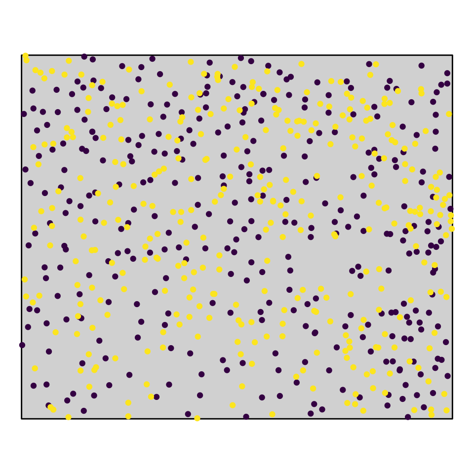

For more information, please see Homo_NullModels.pptx.
Using the data set DouglasFir_LiveDead_OGN.dat calculate O-ring statistics and L-function. Here, pattern 1 gives the locations of live trees and pattern 2 gives the locations of dead trees. Comparing the univariate measures \(O_{11}(r)\) and \(L_{11}(r)\), how do they differ?
For more information, see Slides 6 ff., Slides 26 & Slides 52 ff.
###Exercise 2) The L-function is said to have a memory effect because of its cumulative nature (counting points within discs instead of circles compared to the O-statistic). Can you see it in your results?
For more information, see Slides 26 & Slides 52 ff.
Redo the analysis but now with simulation envelopes. How does the simulation envelope change if you change the settings for the envelope from ‘simulations = 39’ to ‘simulations = 199’ (‘lowest/highest’ = 5). Hint: for easier comparison copy screenshots of the results to some PowerPoint slides.
For more information, see Slides 11 ff. & Slides 63 ff.
Also look at the functions \(O_{22}(r)\) and \(L_{22}(r)\). You can do so by checking the ‘Change patterns’ box in the lower right panel. Note that the plotted functions will still say \(O_{11}(r)\) and \(L_{11}(r)\) because you only switched the marks. Is there a striking difference between dead and live Douglas fir trees?
For more information, see Slides 11 ff. & Slides 63 ff.
… to be continued later today …
